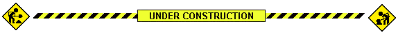

Retro Stuff 
I grew up with the web of the 90s and early 2000s. With Geocities, FTP, Microsoft FrontPage, Netscape Navigator, CuteFTP, Winamp, Napster and personal websites. I often get nostalgic about all that. If you do too, you might enjoy this collection of things from that era.
Built With
The design of this website itself is a tribute to websites of that period.
Most of the animated GIFs on this site are from  Internet Archive's GIFcities, a searchable repository of animated gifs from old Geocities websites.
Internet Archive's GIFcities, a searchable repository of animated gifs from old Geocities websites.
Every single page is hand-coded and hand-linked, right down to the RSS feed (if you find errors, please  let me know). It's hosted on Neocities, a modern-day Geocities-like web host where you can find and follow lots of other old-school websites.
let me know). It's hosted on Neocities, a modern-day Geocities-like web host where you can find and follow lots of other old-school websites.
Websites and Resources
These are websites related to either archiving, documenting or keeping alive the spirit of the 90s/early 2000s web and computer culture:
 Internet Archive,
Internet Archive, - WayBack Machine,
- Windows 98 Icon Viewer,
- Smart Guestbook,
- Neocities Websites,
- Wiby,
- Land of Links,
- The Geocities Gallery,
- Mydora,
- Screenshots from developers & Unix people (2002),
- Project Gemini,
- Epic Rock Radio,
Tools and Utilities
Want to experience the the 90s and early 2000s first-hand? Here are some tools and utilies to get you started:
Winamp skins, Games and Music
This page is under construction. I have a lot more stuff to add and will be doing so over time. Be sure to check back every once in a while.

Guestbook
Of course this website has a guestbook!
What do you think about this page? Do you have a 90s thing that you'd like to see added? Or you just have a comment maybe. You can sign my guestbook or you can read what others have written.
—- This website is under construction. Last updated: 25 May 2020.
- All original text and music on this website are free and in the public domain under the CC0 1.0 Universal license. Download, copy and remix any way you like.
- Made in France. All pages hand-coded, like in the old days. Valid HTML and CSS.
- Hosted on Neocities. View website source code on GitHub. RSS feed available.
- Best viewed in any browser, including Netscape Navigator, Firefox and lynx.
- The main font is Barlow by Jeremy Tribby.